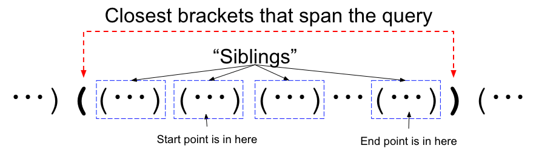
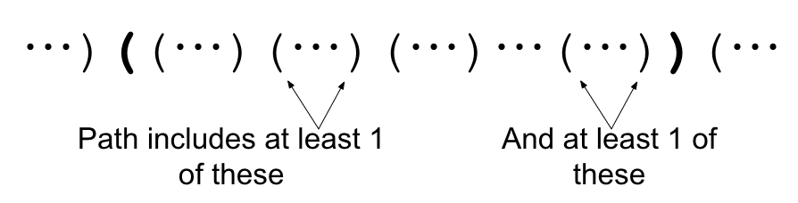
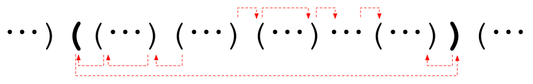
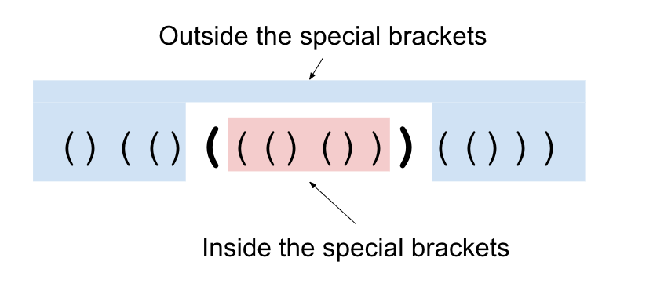
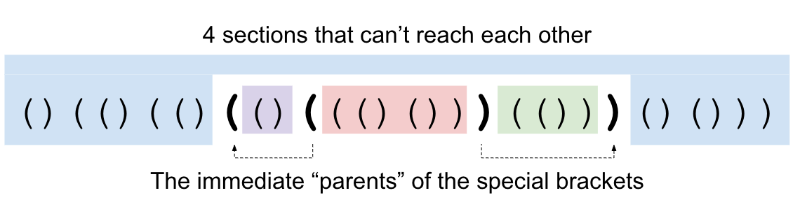
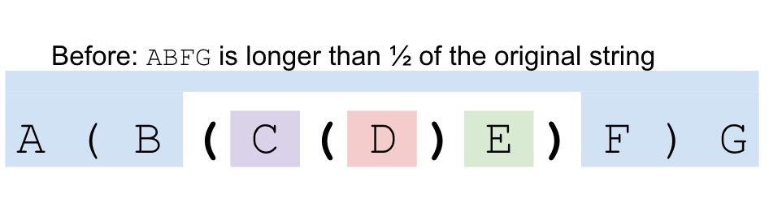
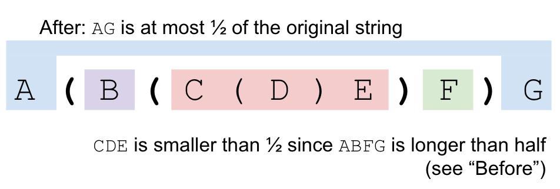

TL;DR: Think of the brackets like a tree where a position's parent is the closest pair of brackets that contain that position. Go to the Lowest Common Ancestor, then back down the tree.
With this problem, our first thought may be to write a breadth first search for each query and add up the values. Unfortunately, this is much too slow for the bounds provided. Thankfully, we can make use of the structure of the Lisp++ program and the fact that all movement costs are 1 (going left, going right, or going to the matching bracket—we will call going left or right "walking" and going to the matching bracket "jumping" to make the explanation easier).
Two somewhat simple observations are needed before we can talk about the intended solution. The first observation needed is that we almost always want to jump instead of walking inside of a pair of brackets. If we are at a bracket endpoint, and jumping to the other endpoint doesn't make us "overshoot" the query's destination, then we should take that jump instead of walking there. The second observation needed is that if a pair of brackets contains both our current position and our destination, we should never move outside of that pair of brackets.
Using just these two observations, let's discuss what an optimal path looks like for a specific query. Consider the closest pair of brackets that contains both the start and end of the query:

The optimal path for this query must move "up" to this level:

One we are at this level, we jump along the top level of the siblings until we are at the brackets for the end query, then move "down" to the query answer. Note that we can jump either left or right (one of which will wrap around when we hit the bracket's endpoint) so we should check both and take the minimum.

At this point, we treat the Lisp++ program as a tree with the parents in the tree being the closest pair of brackets that enclose us. Note that one of the parents is strictly closer than the other, so we will always go to that parent first on our path "up" or "down" the tree. The layer at the top is simply the lowest common ancestor in the tree, which can be computed in O(log K) time.
TL;DR: (1) Find two pairs of brackets that partition the Lisp++ program into 4 disjoint sections. (2) Compute the shortest path from the break points to answer queries that go from one region to another. (3) Recurse on the 4 subregions.
For Test Set 2, some of the properties we used are no longer available to us. In particular, it may now be optimal to venture outside of the LCA described above. There are two main classes of solutions that are used to solve this test set. One is a modification of the LCA algorithm above. We will show the other here because it demonstrates an algorithm that is less traditional. Rather than answering the queries one at a time, we will employ a method where we can solve them in batches.
The key property we will be using is the ability to partition the Lisp++ program into multiple (almost) independent sections. First, let's start with a crucial observation. Consider a pair of matching brackets. The only way to get from inside the brackets to outside the brackets is to cross through the brackets themselves. These brackets that are used to split the input into the different sections will be called the special brackets throughout the explanation.

We can use this fact to answer queries differently. Rather than computing the distance from the starting point to the ending point of the query, we can compute the distance from each of the special brackets to the query's starting point and from the special brackets to the query's ending point. Since we know that any shortest path must go through one of the special brackets, we know that the sum of these two distances is the answer to the query.
At first, it doesn't seem like this helps us. However, note that we can compute the answer to all queries that go from inside the brackets to outside the brackets at once! Just compute the distance from the special brackets to all locations (using Dijkstra's algorithm, for example) and use the method above.
Now what about all of the queries that start and end inside the special brackets (or outside the special brackets)? Well, the shortest path from the start to the end might go through the special brackets we chose, so we should make note of the potential answer if it does. Now, we're only interested in paths that do not use the special brackets.
Thus, we can split our problem up into two sub-problems: the "inside" part and the "outside" part. Split the queries up into their appropriate parts (inside and outside) and recursively solve each of these. Note that the special brackets can be removed completely since we know the answers to any query involving them. There is one issue, though: this isn't necessarily fast enough. ☹ If we choose our special brackets poorly so that the "inside" is always a short string, then this algorithm will need O(K2) time. In order to make this fast, we need to ensure that both subproblems are about half the size of the original problem. If we add in some more heuristics and choose our bracket pair randomly, we can make our code faster on average, but it is not guaranteed to pass the data. There is a slight tweak we can make described below which will save us!
Instead of spliting the string into 2 sections, we will instead split the string into 4 sections. Consider a specific pair of brackets. Those brackets' parents are the closest pair of brackets that enclose them. If we split using a pair of brackets and their parents' brackets, we split our input into 4 sections. Note that it is impossible to get from those inner side pieces to the other side without crossing one of our two pairs of special brackets (since the parents are the closest brackets to our original brackets that would allow us to do that).

This small change looks like we just made things more complicated, but it solves our issue from above! First, let's add a pair of brackets to the outside of our string and set its Li, Ri, and Pi to infinity. This way, all pairs of brackets have a parent, except for this new infinite pair we added.
Let's consider all the bracket pairs whose span (from starting bracket to closing bracket, inclusive) includes the middle bracket (there are two "middle" brackets; we can choose either). Call these brackets the "middle line brackets". The middle line brackets will form a chain in which each bracket pair nests under another middle line bracket, or is the outermost bracket that we added. Our middle line brackets have some nice properties that we can use.
If we consider the middle line brackets from outermost to innermost, we can observe that the spans of the brackets go from containing more than half the characters (the outermost bracket that we added spans the whole string) in our Lisp++ program, to containing at most half of the characters. This is because they are always getting smaller, and the innermost one spans at most half of all characters. Let's consider this "pivot point". It comprises a pair of consecutive middle line brackets in which one spans more than half, and it has a direct child that is also a middle line bracket that spans at most half. If we take these two brackets and cut them out of the string, we will have broken the string into 4 disjoint (possibly empty) parts, none of which contain more than half of the characters in the string.


Why? Let's say our brackets look like this A ( B ( C ) D ) A. We know
that since the outer bracket pair spans more than half, the region A
contains less then half of the characters. We know that the inner bracket either
crosses or touches the middle line, so the regions B and D
contain less than half of the characters. Finally, C has at most half
(remember that we chose C specifically because it was the first middle
line bracket that contained at most half of the characters). Note that we cannot get
from one region to another without crossing a special bracket. In particular, we cannot
get between B and D because the outer special brackets are
the parent of the inner special brackets.
Thus, we can solve the problem by finding the two pairs of special brackets we are going to split on, using Dijkstra's algorithm to answer the queries that go between different regions (as well as compute potential answers for those queries that do not), and then recursing into the 4 sub-problems. Since each recursion cuts the length of the input string in half, we recurse at most O(log K) times. The sum of the strings at any particular depth of the recursion is at most the length of the original string. So the total work we needed to do at each layer is at most O(K log K) to run Dijkstra from our 4 special brackets. Also, each query is looked at at most once on each layer of the recursion, so the total complexity is O(K log2 K + Q log K).
Here is a list of common issues that might explain a Wrong Answer or Time Limit Exceeded verdict:
((((( ... ))))), be of
length sqrt(N). If the input is XXXXX ... XXXX sqrt(N) times, then picking randomly
is not very efficient. In order to split the input, we need to get lucky and
hit one of the outer points of X in order to really cut down on the size of the
input.